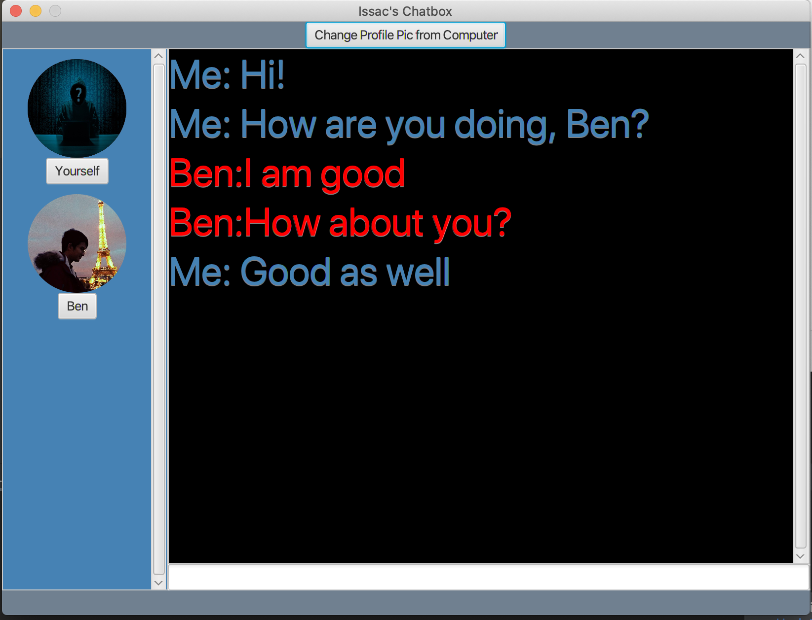

CS Technical Skills


Education
CS Technical Skills
Software Engineering Projects
1. A Multi-user Chatbox using Java, JavaFx and Amazon Cognito EC2
2. A simulation app for Tinder using React Native, Amazon Cognito and Google Firebase
Music
Sports